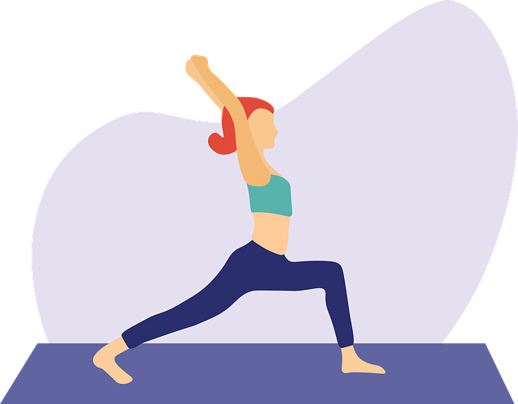

인요가 Yin Yoga
인요가란?
음양의 음(陰, YIN)적인 요소를 강조하는 요가로, 정적이고 차분한 요가이다. 온몸의 스트레칭과 이완에 중점을 둔 편안한 요가이다.

인요가 강의모음
수업명
강의시간
난이도
강의링크
천천히 구석구석, 굳은 몸을 풀어주는 이완 요가
17분
낮음
클릭
다리붓기 빼는 하체 스트레칭
17분
낮음
클릭
혈액순환을 돕는 요가 스트레칭
25분
낮음
클릭